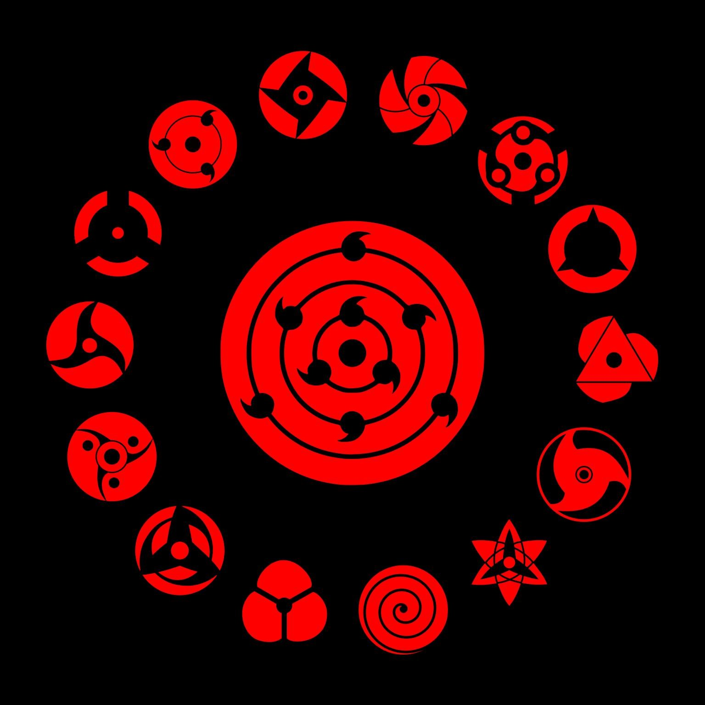
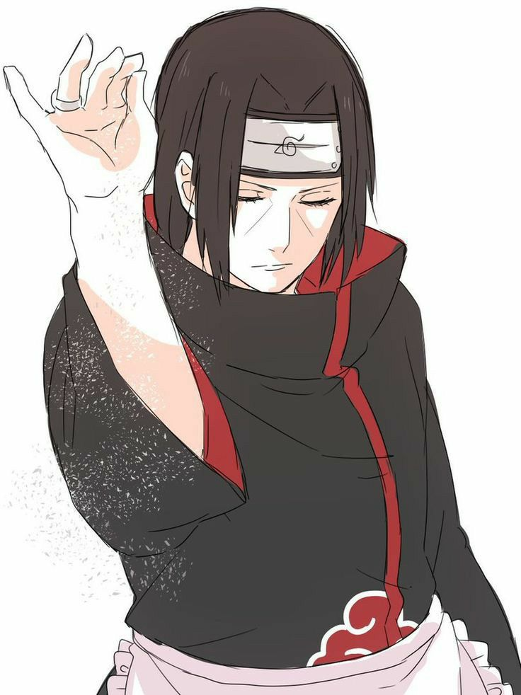
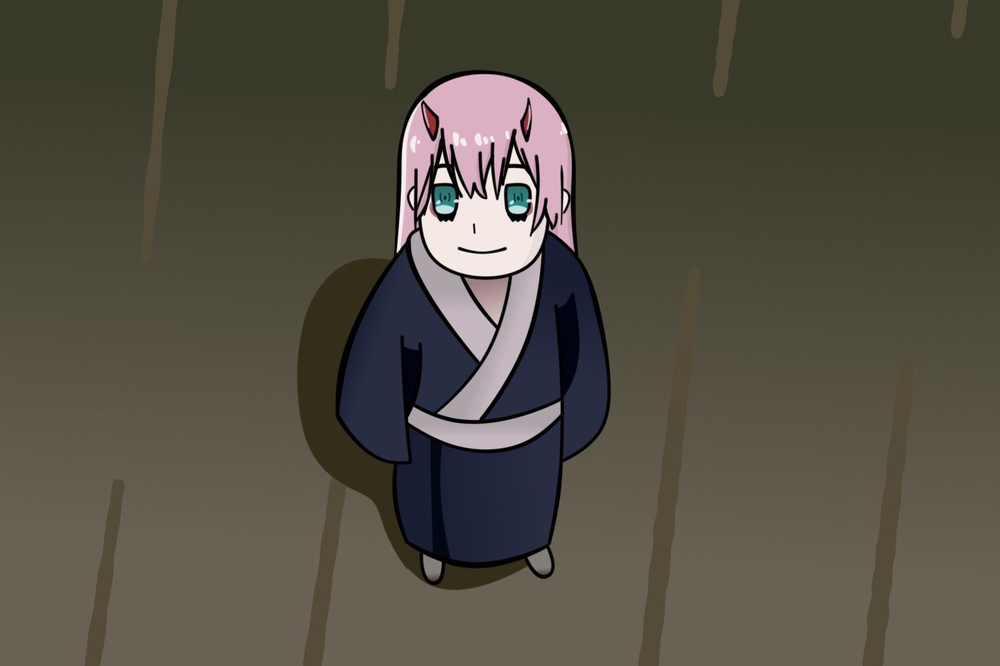

Умею призвать девятихвостого лиса.
Курама (яп. 九喇嘛, Курама), более известный как Девятихвостый (яп. 九尾, Кьюби) — один из девяти хвостатых зверей
Призвать


От шарингана на 3 стадии и ниже защищаться даже не надо защититься от Шарингана.
Курама (яп. 九喇嘛, Курама), более известный как Девятихвостый (яп. 九尾, Кьюби) — один из девяти хвостатых зверей
Техники
2m
Users
78
Countries
10,000+
Medical experts
Тысячелетие Боли—достаточно простая техника Какаши Хатаке Какаши Хатаке
Тысячелетие Боли—достаточно простая техника Какаши Хатаке с очень драматичным названием, которую позже освоил и Наруто. При её использовании шиноби вставляет свои указательный и средний пальцы (подобно печати Тигра) в задний проход противника, из-за чего
тот испытывает боль, тоску, печаль и разочарование в жизни.
Техники
Хатаке Какаши Хатаке
испытывает боль, тоску, печаль и разочарование в жизни.

Ичиго Итачи
Имба ултра мега мащер
Неджи Неджи
мега улта

Сакура Чан
сильный удар хилл